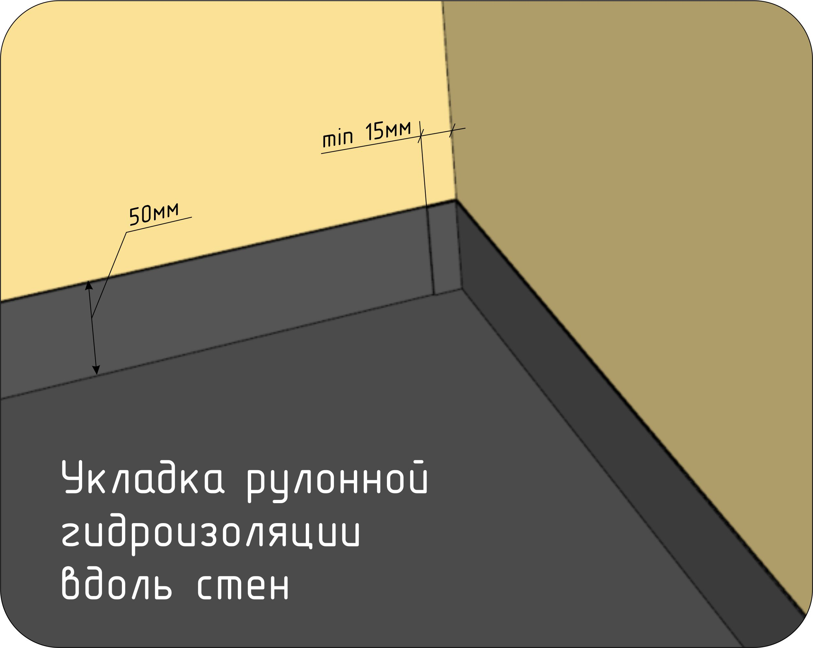
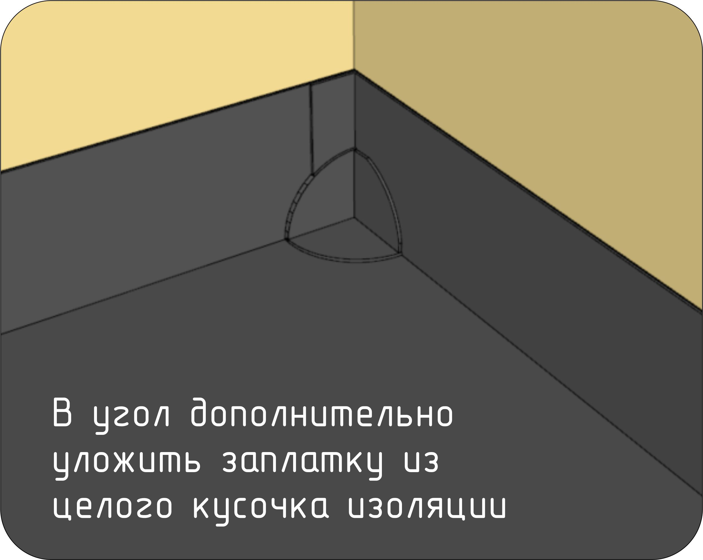

5.3.6 Внутренняя отделка модуля
-
5.3.6.1. Отделка пола, стен и потолка модуля.
Необходимая документация для выполнения работ: Разделы КР, КР.М.
Производимые операции:
- Панели модуля собираются из готовых крашеных заготовок ТСП, поэтому внутренняя отделка стен и потолка будет заключаться только в локальных подкрасах мест, поврежденных при сборке модуля, либо в зачистке панелей от выступившего из стыков PUR-клея.
- Панель пола в модуле необходимо будет подготовить под укладку греющих секций теплого пола. Последовательность действий будет описана в разделе 5.3.12.
Контрольные параметры:
- На поверхности стен и потолка отстутствуют сколы, вмятины, выпавшие сучки.
- Отстутствуют следы PUR-клея.
Необходимый инструмент и оборудование:
- Нет.
Расходные материалы:
- Нет.
5.3.6.1. Отделка пола, стен и потолка модуля. Ссылка на фотографии производства работ:

-
5.3.6.2. Отделка санузла. Стены. Подготовительные работы.
Производимые операции:
- Убедиться, что все работы по прокладке коммуникаций внутри санузла выполнены.
- Установить фанеру поверх контрбруса. Фанеру клеить на ПВА-М и крепить на гвозди с шагом 300мм.
- Покрыть стены санузла жидкой гидроизоляцией.
Стыки листов фанеры и углы армировать специальной лентой, утопив ее внутри гидроизоляционного состава.
После высыхания первого слоя гидроизоляции нанести второй.
Контрольные параметры:
- Наличие гидроизоляции на стенах и полу санузла.
- Наличие армирующей ленты на стыках фанеры и в углах.
По факту окончания работ ставится отметка в паспорте ОТК.
Необходимый инструмент и оборудование:
- Гвоздезабивной пистолет.
- Молоток.
- Рулетка 5м.
- Кисть 100мм.
Расходные материалы:
- Гвоздь барабанный с винтовой накаткой CNW 25/60 BKSCH.
- Клей ПВА-М.
- Жидкая гидроизоляция (согласно комплектовки).
- Армирующая лента для гидроизоляции (согласно комплектовки).
5.3.6.2. Отделка санузла. Стены. Подготовительные работы. Ссылка на фотографии производства работ:
-
5.3.6.3. Отделка санузла. Пол. Подготовительные работы.
Необходимая документация для выполнения работ: Разделы КР, КР.М.
Схема устройства пирога пола в санузле.Производимые операции:
- Уложить на пол рулонную битумную гидроизоляцию с заходом на стены и вглубь дверного проема на 50мм. В углах стен обеспечить перехлест гидроизоляции минимум на 15мм. Прикатать валиком.  
- На гидроизоляцию уложить напиленные в размер заготовки армированной цементной плиты толщиной 12мм. В заготовках сделать отверстия под аварийный трап и датчик протечки. Допустимый зазор между заготовками 5мм. Крепить саморезами ЖЦ 5х40 с шагом 300-400мм по центру и краям заготовок. Руководство по монтажу трапа.
- В отверстие датчика протечки рядом с аварийным трапом вставить заглушку высотой выше уровня наливного пола.
Контрольные параметры:
- Нахлест рулонной гидроизоляции на стены: min 50мм.
- Выпуск рулонной гидроизоляции в дверной проем: min 50мм.
- Наличие перехлеста гидроизоляции в углах стен санузла.
- Зазор между заготовками из цементной плиты: не более 5мм.
- Зазор между заготовками из цементной плиты и стенами: не более 5мм.
По факту окончания работ ставится отметка в паспорте ОТК.
Необходимый инструмент и оборудование:
- Валик прорезиненный 150мм.
- Рулетка 5м.
- Бита PZ2.
- Нож.
Расходные материалы:
- Саморезы ЖЦ 5х40.
- Сменные лезвия для ножа.
5.3.6.3. Отделка санузла. Пол. Подготовительные работы. Ссылка на фотографии производства работ:
-
5.3.6.4. Отделка санузла. Пол. Заливка наливного пола.
Необходимая документация для выполнения работ: Разделы КР, КР.М.
Перед выполнением данных работ необходимо уложить греющий кабель. Работы по укладке описаны в этапе 5.3.4
Производимые операции:
- Убедиться, что на полу санузла уложен греющий кабель, произведена фотофиксация выполненных работ и имеется отметка об этом в паспорте ОТК.
- Установить на полу "маячки" (площадки 30х30мм, толщиной равной толщине наливного пола). Маячки устанавливаются по углам и в центре помещения.
На границе наливного пола в дверном проеме установить бортик высотой, равной толщине наливного пола.
Убедиться, что греющий кабель, муфты греющего кабеля, гофротрубка с термодатчиком не выступают за пределы наливного пола. - Приготовить смесь наливного пола согласно инструкции применяемой смеси.
Заливать от дальней стенки в сторону дверного проема. При заливке прокатывать смесь игольчатым валиком для наливного пола.
Верхний уровень наливного пола должен соответствовать высоте маячков и высоте ограничительного бортика в дверном проеме.
Контрольные параметры:
- Толщина наливного пола: 0 -1мм.
- Пол залит равномерно. На поверхности наливного пола отсутствуют раковины, провалы.
- Греющий кабель и его элементы не выступают за пределы наливного пола.
По факту окончания работ поставить отметку в паспорте ОТК с датой заливки пола.
Необходимый инструмент и оборудование:
- Дрель-миксер.
- Насадка-миксер.
- Ведро строительное 20л.
- Правило алюминиевое 1,0м.
- Аккумуляторный шуруповерт с зажимным патроном.
- Бита PZ3.
- Рулетка 5м.
- Валик игольчатый для наливного пола.
- Ручка телескопическая для валика.
Расходные материалы:
- Саморезы СЧ 3,5х41.
5.3.6.4. Отделка санузла. Пол. Заливка наливного пола. Ссылка на фотографии производства работ:
-
5.3.6.5. Отделка санузла. Укладка плитки.
Необходимая документация для выполнения работ: Разделы АР, КР, КР.М.
Производимые операции:
- Убедиться, что наливной пол затвердел. Монтаж плитки производить не раньше срока,
указанного в инструкции применяемого наливного пола.
Порядок раскладки плитки указан в разделе АР. - Обработать пол и стены составом "Грунтовка глубокого проникновения Церезит CT17" в один слой. Наносить, руководствуясь инструкцией состава.
- Монтаж плитки начинать с пола. На пол плитка укладывается на плиточный клей, согласно технологии укладки керамогранита. Неровности наливного пола компенсировать за счет толщины плиточного клея.
- После набора прочности плиточного клея на полу выполнить монтаж плитки по стенам. По стенам плитка укладывается на полиуретановый герметик. Порядок раскладки плитки указан в разделе АР.
- Выполнить затирку швов плитки, плотно заполняя швы. Углы санузла заполнить герметиком в цвет затирки. Отверстия вокруг выводов водорозеток заполнить герметиком. Если водорозетка расположена на плитке, то герметик в цвет затирки. Если водорозетка расположена на стене, то герметик в цвет стены.
Контрольные параметры:
- Плитки лежат в одной плоскости.
- Швы затерты. В швах отсутствуют пустоты.
- Углы санузла заполнены герметиком.
Необходимый инструмент и оборудование:
- Дрель-миксер.
- Насадка-миксер.
- Ведро строительное 20л.
- Правило алюминиевое 1,0м.
- Аккумуляторный шуруповерт с зажимным патроном.
- Кисть 100мм.
- Бита PZ3.
- Рулетка 5м.
- Пистолет для герметиков и монтажного клея.
- Шпатель зубчатый 6мм.
- Шпатель гладкий полиуретановый (для выравнивания герметика).
Расходные материалы:
- Герметик в цвет затирки.
- Герметик в цвет стен.
5.3.6.5. Отделка санузла. Укладка плитки. Ссылка на фотографии производства работ:
- Убедиться, что наливной пол затвердел. Монтаж плитки производить не раньше срока,
указанного в инструкции применяемого наливного пола.
-
5.3.6.6. Отделка санузла. Монтаж ТСП.
Необходимая документация для выполнения работ: Разделы КР, КР.М.
Производимые операции:
- Подготвить ТСП согласно спецификации напила для санузла.
- Монтаж ТСП начинать таким образом, чтобы каждый последующий лист накладывался пазом на уже установленный, а не подсовывался под него.
Нанести на тыльную сторону ТСП PUR-клей размером с горошину в 5 точках: по углам и по центру. - Приложить ТСП на фанеру и закрепить потайными шпильками типа GA с шагом 400-500мм. Шпильки располагать строго друг над другом по вертикальной оси, чтобы было красиво.
Контрольные параметры:
- Совпадение с проектными отступами. Допуск: 0 -1мм.
- Зазор стыка ТСП. Допуск: 0 +1мм.
- Отсутствие выступающих, недозабитых шпилек.
- Отсутствуют перепады на стыках ТСП.
По факту окончания сборки модуля ставится отметка в паспорте ОТК.
Необходимый инструмент и оборудование:
- Финишный нейлер.
- Рулетка 5м.
- Уголок плотницкий металлический - 300мм.
- Карандаш простой.
- Молоток.
Расходные материалы:
- Штифт GA16 1,6х50мм.
- Клей PUR.
- Ветошь.
5.3.6.6. Отделка санузла. Монтаж ТСП. Ссылка на фотографии производства работ:
-
5.3.6.7. Отделка печного проема.
Необходимая документация для выполнения работ: Разделы КР, КР.М. Монтаж печного листа на потолок. Монтаж печного листа на стену.
Производимые операции:
- Руководствоваться приложенными инструкциями на монтаж печных листов.
- Проверить комплект печных листов.
- Проверить, что шляпки монтажных саморезов пролазят в крепежные отверстия листов.
- Закрутить саморезы ЖЦ 5х40 в ТСП, соответственно размерам крепежным отверстим печного листа.
- Навесить лист на установленные саморезы.
- Суперсил в потолочном листе не разрезать.
Контрольные параметры:
- Зазор между листом и ТСП. Допуск: 0 -1мм.
- Отсутствие механических повреждений печного листа.
- В потолочный лист вставлен суперсил.
Необходимый инструмент и оборудование:
- Аккумуляторный шуруповерт.
- Бита PZ2.
- Рулетка 5м.
- Уголок плотницкий металлический - 300мм.
- Карандаш простой.
- Нож.
Расходные материалы:
- Саморез ЖЦ 5х40.
5.3.6.7. Отделка печного проема. Ссылка на фотографии производства работ: